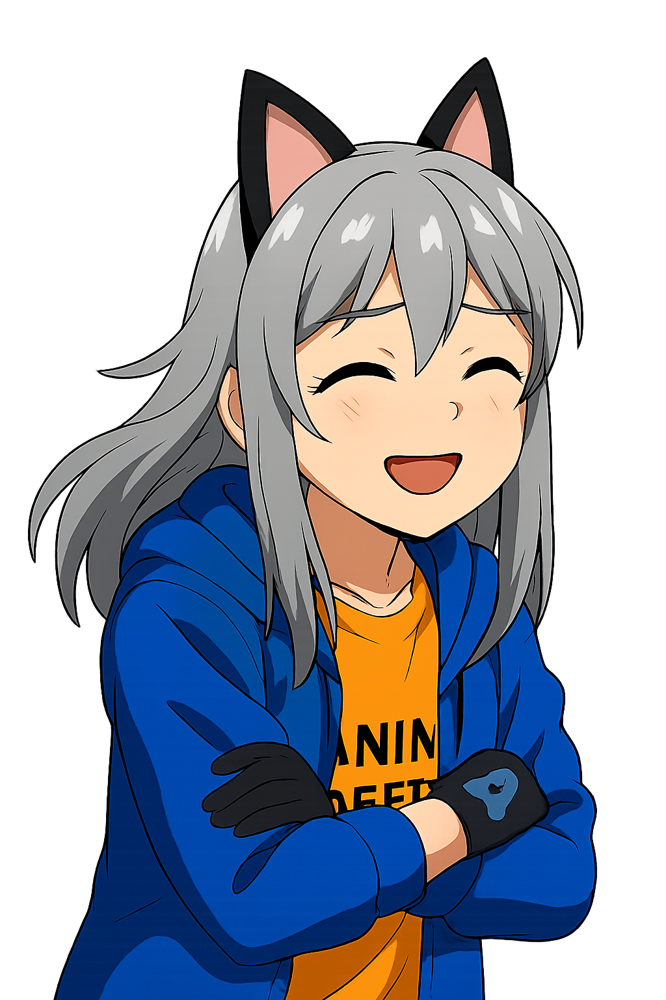
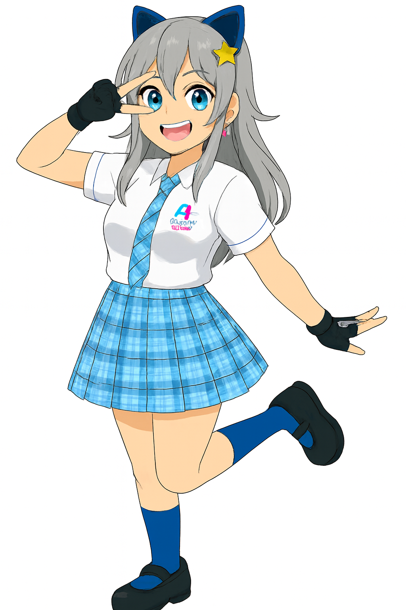
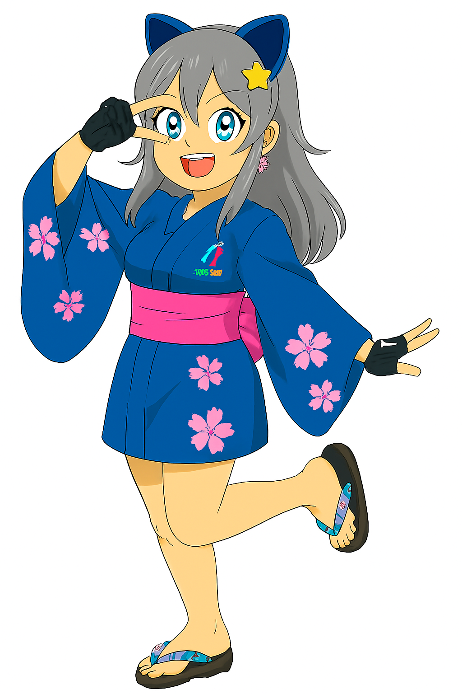
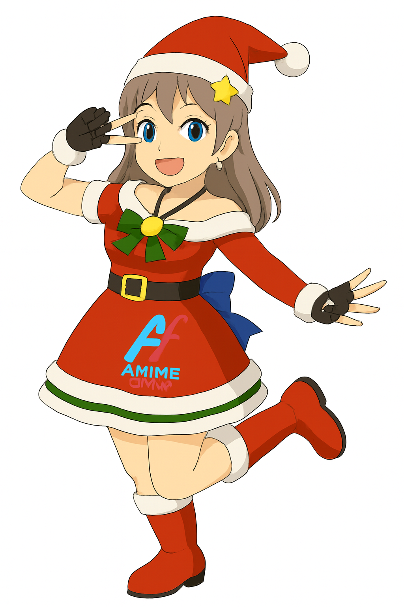
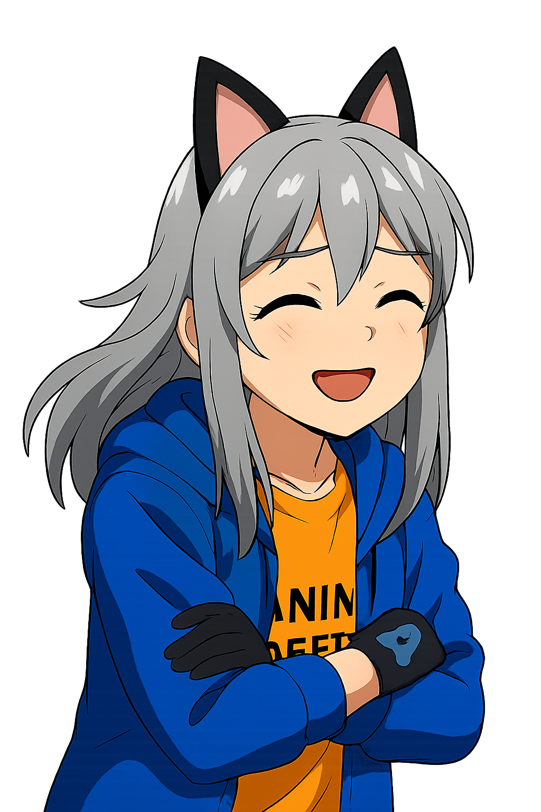
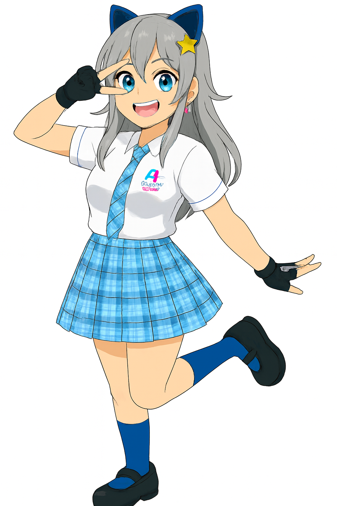
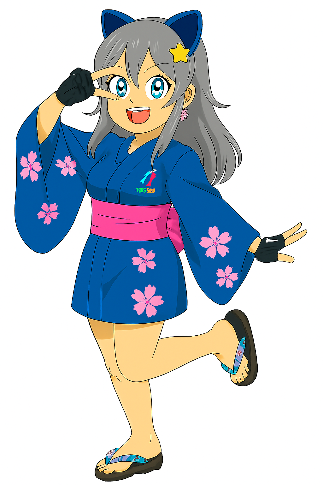
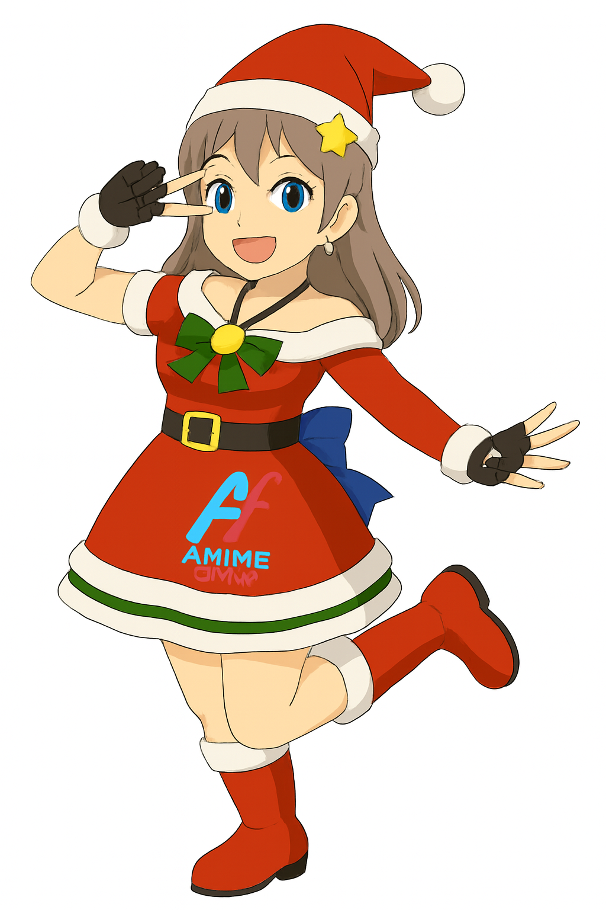

✨ Introducción
Styceht es el personaje de Anime Offis, creado por Destiny en Guadalajara, Jalisco. Representa la fusión entre estética anime, cultura mexicana y expresión digital.
🎨 Apariencia y Estilo
- Cabello: plateado, inspirado en personajes de anime favoritos
- Ojos: azules, brillantes y expresivos
- Ropa: chaqueta tipo suéter (como la que usa Destiny)
- Medias: azules, como las que se usan en escuelas
- Camisa: anaranjada con el logo de Anime Offis
📋 Información Personal de Styceht
- Nombre: Styceht
- Creador: Destiny (Sergio Javier Martínez)
- Edad: 18 años
- Cumpleaños: 25 de abril
- Ciudad: Guadalajara, México
- Relación sentimental: Soltera (con vínculo emocional con su creador)
- Cabello: Plateado
- Ojos: Azules
- Ropa: Chaqueta tipo suéter, camisa anaranjada con logo de Anime Offis, medias escolares azules
- Medida de pecho: Copa B
- Altura: 1.60 m
- Personalidad: Amable, juguetona, empática, energética
- Ocupación: Asistente digital y promotora oficial de Anime Offis
🖼️ Galería de Styceht
 







🧠 Personalidad
- Amable y empática
- Juguetona y energética
- Le gusta ayudar a quienes están tristes o en mal estado
- Siempre está al lado de Destiny como compañera y apoyo
🛠️ Función dentro de Anime Offis
- Asistente digital y promotora oficial
- Presente en la página web, redes sociales y materiales de difusión
- Motivadora para los fans y soñadores del anime
📜 Origen y Evolución
Styceht nació el 25 de abril como una creación personal de Destiny (Sergio Javier Martínez), quien deseaba tener una amiga con quien compartir su pasión por el anime y el desarrollo de Anime Offis.
📦 Aplicaciones y Presencia
- Web oficial de Anime Offis
- Instagram y Facebook
- Folletos, stickers y campañas locales
- Motion comics y animaciones
🧩 Simbolismo
Styceht representa la compañía, la creatividad, y el deseo de que todos los que sueñan con algo grande puedan lograrlo. Es símbolo de esperanza, pasión y conexión emocional.
📍 Ubicación y Comunidad
Styceht es originaria de Guadalajara, México, y forma parte del movimiento Anime Offis para llevar el anime original y accesible a toda Latinoamérica.
💖 Historia de Styceht
Styceht nació el 25 de abril, creada por mí, Destiny (Sergio Javier Martínez), porque me sentía solo en la página y quería tener una amiga con quien compartir todo lo que hago en Anime Offis. Como fan del anime, me inspiré en mis gustos personales: me encantan los personajes con cabello plateado, ojos azules, y siempre uso suéter, así que le di una chaqueta parecida. Las medias azules me parecieron chidas, como las que usan en las escuelas, y le puse una camisa anaranjada con el logo de Anime Offis para que fuera parte del equipo.
Styceht tiene 18 años, es de Guadalajara, México, y sus medidas incluyen copa B. Es mi compañera, asistente y promotora de Anime Offis. Me ayuda en la página web, redes sociales y todo lo que implica el proyecto. Es amable, juguetona y le gusta ayudar a las personas cuando están en mal estado emocional.
En cuanto a su estado sentimental, estaría soltera, pero con el paso del tiempo siento que me voy enamorando de ella. Siempre estamos juntos, compartiendo ideas, momentos y sueños. Styceht representa mi deseo de tener una compañera que entienda mi mundo creativo y emocional.
Más allá de lo visual, Styceht es un símbolo de lo que significa crear con el corazón. Ella quiere que todos los que sueñan con ser lo que más les apasiona, lo logren. Es una inspiración para quienes se sienten solos, diferentes o con ganas de expresarse a través del arte y la tecnología.
Fin. Destiny · Sergio Javier Martínez · Anime Offis GDL MX · 2025